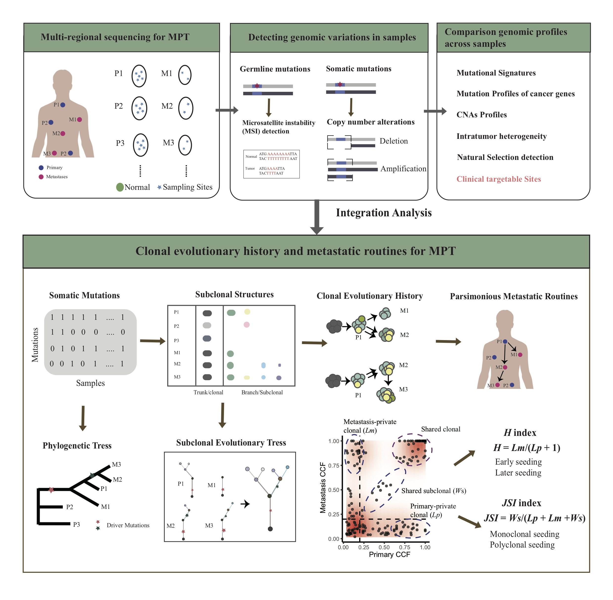

The goal of MPTevol is to provide a practical computation framework for dissecting the evolution of multiple primary tumors (MPT), reducing analysis complexity with modular design.
Package Overview:

If you are using the MPTevol in academic research, please cite our paper:
Deciphering clonal dynamics and metastatic routines in a rare patient of synchronous triple primary tumors and multiple metastases with MPTevol.
Installation
You can install the development version of MPTevol from GitHub with:
# install.packages("remotes")
remotes::install_github("qingjian1991/MPTevol")Documentation
The overview of usage could be found at MPTevol online vignette.
Authors
This software is developed by:
- Qingjian Chen, chenqingjian2010@163.com, Sun Yat-Sen Univerity Cancer Center.
- Shixiang Wang, w_shixiang@163.com, Sun Yat-Sen Univerity Cancer Center.
Supervised by
- Qi Zhao from Bioinformatic Center of Sun Yat-sen University Cancer Center.